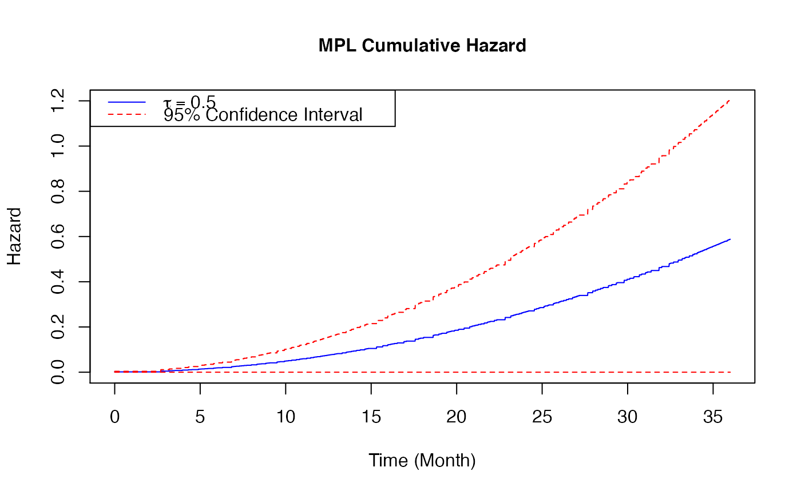
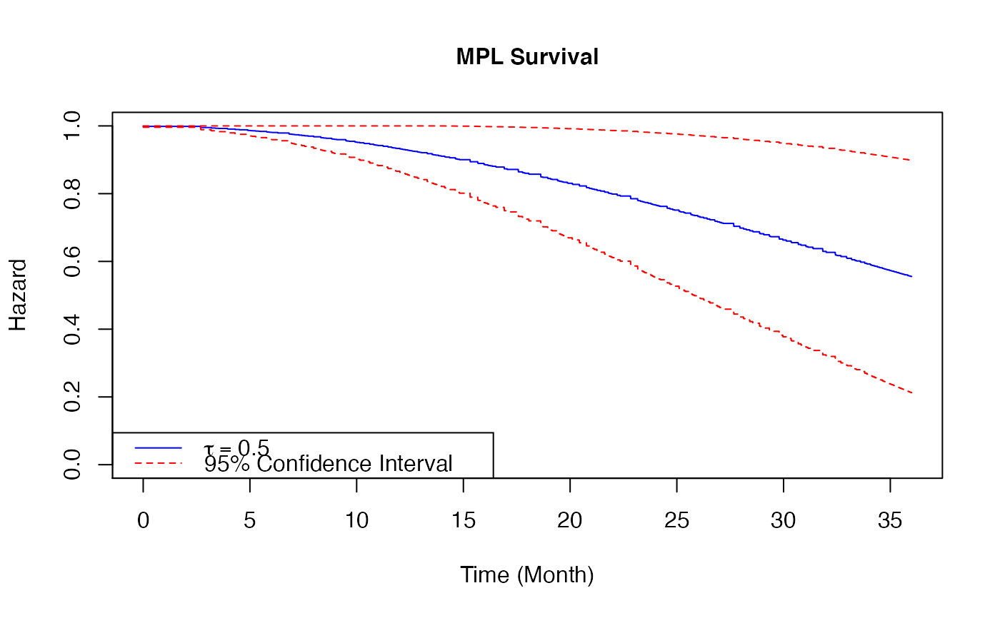

Plot a baseline hazard estimates from coxph_mpl_dc Object
plot.coxph_mpl_dc.RdPlot the baseline hazard with the confidence interval estimates
# S3 method for coxph_mpl_dc plot( x, parameter = "theta", funtype = "hazard", xout, se = TRUE, ltys, cols, ... )
Arguments
| x | an object inheriting from class |
|---|---|
| parameter | the set of parameters of interest. Indicate |
| funtype | the type of function for ploting, i.e. |
| xout | the time values for the baseline hazard plot |
| se | se=TRUE gives both the MPL baseline estimates and 95% confidence interval plots while se=FALSE gives only the MPL baseline estimate plot. |
| ltys | a line type vector with two components, the first component is the line type of the baseline hazard while the second component is the line type of the 95% confidence interval |
| cols | a colour vector with two components, the first component is the colour of the baseline hazard while the second component is the colour the 95% confidence interval |
| ... | other arguments |
Value
the baseline hazard plot
Details
When the input is of class coxph_mpl_dc and parameters=="theta", the baseline estimates
base on \(\theta\) and xout (with the corresponding 95% confidence interval if se=TRUE ) are ploted.
When the input is of class coxph_mpl_dc and parameters=="gamma", the baseline hazard estimates
based on \(\gamma\) and xout (with the corresponding 95% confidence interval if se=TRUE ) are ploted.
References
Brodaty H, Connors M, Xu J, Woodward M, Ames D. (2014). "Predictors of institutionalization in dementia: a three year longitudinal study". Journal of Alzheimers Disease 40, 221-226.
Xu J, Ma J, Connors MH, Brodaty H. (2018). "Proportional hazard model estimation under dependent censoring using copulas and penalized likelihood". Statistics in Medicine 37, 2238–2251.
See also
Author
Jing Xu, Jun Ma, Thomas Fung
Examples
# \donttest{ ##-- Copula types copula3 <- 'frank' ##-- A real example ##-- One dataset from Prospective Research in Memory Clinics (PRIME) study ##-- Refer to article Brodaty et al (2014), ## the predictors of institutionalization of dementia patients over 3-year study period data(PRIME) surv<-as.matrix(PRIME[,1:3]) #time, event and dependent censoring indicators cova<-as.matrix(PRIME[, -c(1:3)]) #covariates colMeans(surv[,2:3]) #the proportions of event and dependent censoring#> Event Depcen #> 0.2675815 0.2504288#> [1] 583#> [1] 15#> [1] "Time" "Event" "Depcen" "Age" #> [5] "Gender" "HighEdu" "Alzheimer" "CDR_base" #> [9] "MMSE_base" "SMAF_base" "ZBI_base" "NPI_base" #> [13] "Benzon" "Antiphsy" "LivingAlone" "MMSE_change_3m" #> [17] "SMAF_change_3m" "NPI_change_3m"##--MPL estimate Cox proportional hazard model for institutionalization under medium positive ##--dependent censoring control <- coxph_mpl_dc.control(ordSp = 4, binCount = 200, tie = 'Yes', tau = 0.5, copula = copula3, pent = 'penalty_mspl', smpart = 'REML', penc = 'penalty_mspl', smparc = 'REML', cat.smpar = 'No' ) coxMPLests_tau <- coxph_mpl_dc(surv=surv, cova=cova, control=control, ) plot(x = coxMPLests_tau, parameter = "theta", funtype="hazard", xout = seq(0, 36, 0.01), se = TRUE, cols=c("blue", "red"), ltys=c(1, 2), type="l", lwd=1, cex=1, cex.axis=1, cex.lab=1, xlab="Time (Month)", ylab="Hazard", xlim=c(0, 36), ylim=c(0, 0.05) )legend( 'topleft',legend = c( expression(tau==0.5), "95% Confidence Interval"), col = c("blue", "red"), lty = c(1, 2), cex = 1)plot(x = coxMPLests_tau, parameter = "theta", funtype="cumhazard", xout = seq(0, 36, 0.01), se = TRUE, cols=c("blue", "red"), ltys=c(1, 2), type="l", lwd=1, cex=1, cex.axis=1, cex.lab=1, xlab="Time (Month)", ylab="Hazard", xlim=c(0, 36), ylim=c(0, 1.2) )legend( 'topleft', legend = c( expression(tau==0.5), "95% Confidence Interval"), col = c("blue", "red"), lty = c(1, 2), cex = 1 )plot(x = coxMPLests_tau, parameter = "theta", funtype="survival", xout = seq(0, 36, 0.01), se = TRUE, cols=c("blue", "red"), ltys=c(1, 2), type="l", lwd=1, cex=1, cex.axis=1, cex.lab=1, xlab="Time (Month)", ylab="Hazard", xlim=c(0, 36), ylim=c(0, 1) )legend( 'bottomleft', legend = c( expression(tau==0.5), "95% Confidence Interval"), col = c("blue", "red"), lty = c(1, 2), cex = 1 )# }